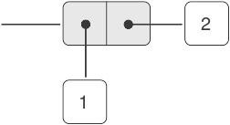
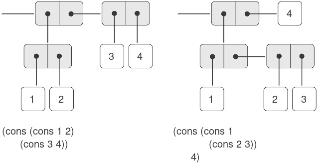
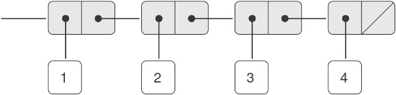
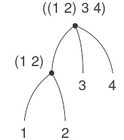
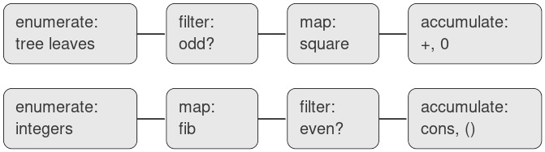
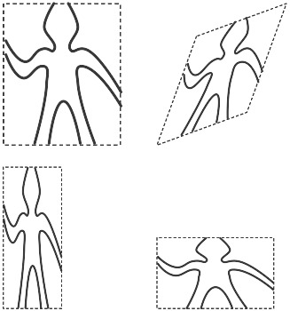
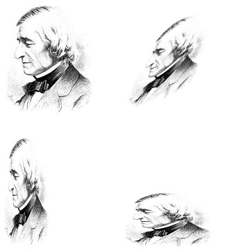
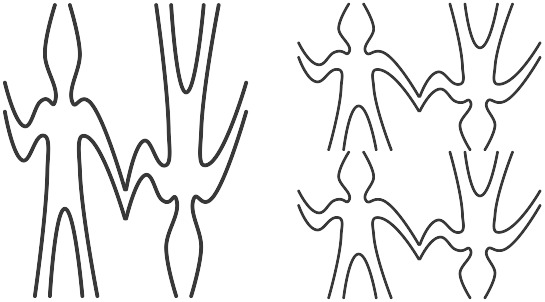
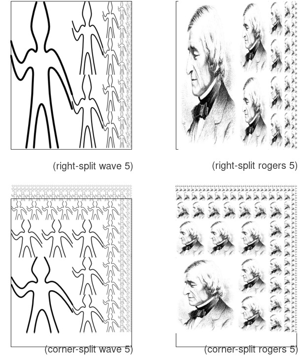
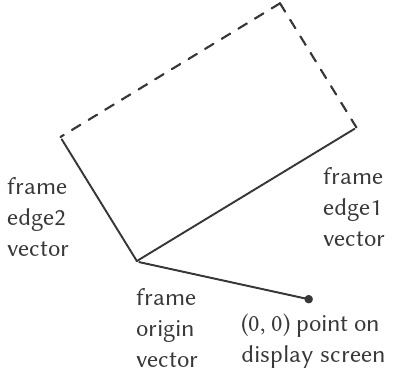

2.2 Dữ liệu phân cấp và tính chất closure
Như chúng ta đã thấy, pair (cặp) cung cấp một dạng “keo” nguyên thủy mà ta có thể dùng để xây dựng các đối tượng dữ liệu phức hợp. Hình 2.2 cho thấy một cách tiêu chuẩn để hình dung một pair — trong trường hợp này là pair được tạo bởi (cons 1 2). Trong cách biểu diễn này, được gọi là box-and-pointer notation (“ký pháp hộp-và-con-trỏ”), mỗi đối tượng được thể hiện như một pointer (con trỏ) tới một hộp. Hộp của một đối tượng nguyên thủy chứa phần biểu diễn của đối tượng đó. Ví dụ, hộp của một số chứa ký hiệu số. Hộp của một pair thực chất là một hộp kép, phần bên trái chứa (một con trỏ tới) car của pair và phần bên phải chứa cdr.

Figure 2.2: Box-and-pointer representation of (cons 1 2).
Chúng ta đã thấy rằng cons có thể được dùng để kết hợp không chỉ các số mà cả các pair. (Bạn đã sử dụng thực tế này, hoặc lẽ ra nên sử dụng, khi làm Bài tập 2.2 và Bài tập 2.3.) Do đó, pair cung cấp một khối xây dựng phổ quát từ đó ta có thể tạo ra đủ loại cấu trúc dữ liệu. Hình 2.3 cho thấy hai cách dùng pair để kết hợp các số 1, 2, 3 và 4.

Figure 2.3: Two ways to combine 1, 2, 3, and 4 using pairs.
Khả năng tạo ra các pair mà phần tử của chúng cũng là pair chính là bản chất của tầm quan trọng của list structure (“cấu trúc danh sách”) như một công cụ biểu diễn. Chúng ta gọi khả năng này là closure property (“tính chất closure”) của cons. Nói chung, một phép toán kết hợp các đối tượng dữ liệu thỏa mãn closure property nếu kết quả của việc kết hợp các đối tượng bằng phép toán đó lại có thể được kết hợp tiếp bằng chính phép toán đó1. Closure là chìa khóa sức mạnh của bất kỳ phương thức kết hợp nào, bởi nó cho phép ta tạo ra các cấu trúc hierarchical (phân cấp) — các cấu trúc được tạo thành từ các phần, mà bản thân mỗi phần lại được tạo thành từ các phần nhỏ hơn, và cứ thế tiếp diễn.
Ngay từ đầu Chương 1, chúng ta đã sử dụng một cách thiết yếu closure khi làm việc với procedure, bởi hầu hết các chương trình, trừ những chương trình đơn giản nhất, đều dựa vào thực tế rằng các phần tử của một phép kết hợp bản thân chúng cũng có thể là các phép kết hợp. Trong phần này, chúng ta sẽ xét các hệ quả của closure đối với dữ liệu phức hợp. Chúng ta sẽ mô tả một số kỹ thuật thông dụng để dùng pair biểu diễn sequence (dãy) và tree (cây), và sẽ trình bày một ngôn ngữ đồ họa minh họa closure một cách sinh động2.
2.2.1 Biểu diễn Sequence
Một trong những cấu trúc hữu ích mà ta có thể xây dựng bằng pair là sequence — một tập hợp có thứ tự các đối tượng dữ liệu. Tất nhiên, có nhiều cách để biểu diễn sequence bằng pair. Một cách đặc biệt trực quan được minh họa trong Hình 2.4, nơi sequence 1, 2, 3, 4 được biểu diễn như một chuỗi các pair. car của mỗi pair là phần tử tương ứng trong chuỗi, và cdr của pair là pair tiếp theo trong chuỗi. cdr của pair cuối cùng báo hiệu kết thúc sequence bằng cách trỏ tới một giá trị đặc biệt không phải là pair, được biểu diễn trong sơ đồ box-and-pointer bằng một đường chéo và trong chương trình bằng giá trị của biến nil. Toàn bộ sequence được tạo ra bằng các phép cons lồng nhau:
(cons 1
(cons 2
(cons 3
(cons 4 nil))))

Figure 2.4: The sequence 1, 2, 3, 4 represented as a chain of pairs.
Một sequence như vậy của các pair, được tạo bởi các cons lồng nhau, được gọi là list, và Scheme cung cấp một nguyên thủy gọi là list để hỗ trợ việc xây dựng list3. Sequence ở trên có thể được tạo ra bởi (list 1 2 3 4). Nói chung,
(list ⟨a₁⟩ ⟨a₂⟩ … ⟨aₙ⟩)
tương đương với
(cons ⟨a₁⟩
(cons ⟨a₂⟩
(cons …
(cons ⟨aₙ⟩
nil)…)))
Các hệ thống Lisp theo thông lệ in list bằng cách in dãy các phần tử, đặt trong dấu ngoặc đơn. Do đó, đối tượng dữ liệu trong Hình 2.4 được in ra là (1 2 3 4):
(define one-through-four (list 1 2 3 4))
one-through-four
(1 2 3 4)
Cần cẩn thận để không nhầm lẫn biểu thức (list 1 2 3 4) với list (1 2 3 4), vốn là kết quả thu được khi biểu thức được đánh giá. Cố gắng đánh giá biểu thức (1 2 3 4) sẽ gây lỗi khi interpreter cố áp dụng procedure 1 cho các đối số 2, 3, 4.
Ta có thể coi car là phép chọn phần tử đầu tiên trong list, và cdr là phép chọn sublist gồm tất cả các phần tử trừ phần tử đầu tiên. Các phép áp dụng lồng nhau của car và cdr có thể được dùng để trích xuất phần tử thứ hai, thứ ba, và các phần tử tiếp theo trong list4. Constructor cons tạo ra một list giống như list ban đầu, nhưng có thêm một phần tử ở đầu.
(car one-through-four)
1
(cdr one-through-four)
(2 3 4)
(car (cdr one-through-four))
2
(cons 10 one-through-four)
(10 1 2 3 4)
(cons 5 one-through-four)
(5 1 2 3 4)
Giá trị của nil, được dùng để kết thúc chuỗi các pair, có thể được coi là một sequence không có phần tử nào, tức empty list (danh sách rỗng). Từ nil là dạng rút gọn của từ Latin nihil, nghĩa là “không gì cả”5.
Việc sử dụng từ “closure” ở đây xuất phát từ đại số trừu tượng, nơi một tập hợp các phần tử được gọi là đóng dưới một phép toán nếu việc áp dụng phép toán đó lên các phần tử trong tập cho ra một phần tử vẫn thuộc tập. Cộng đồng Lisp cũng (thật không may) dùng từ “closure” để mô tả một khái niệm hoàn toàn khác: closure là một kỹ thuật hiện thực để biểu diễn procedure với các biến tự do. Chúng tôi không dùng từ “closure” theo nghĩa thứ hai này trong cuốn sách này.
Khái niệm rằng một phương thức kết hợp nên thỏa mãn closure là một ý tưởng đơn giản. Thật không may, các công cụ kết hợp dữ liệu trong nhiều ngôn ngữ lập trình phổ biến không thỏa mãn closure, hoặc khiến việc khai thác closure trở nên rườm rà. Trong Fortran hoặc Basic, người ta thường kết hợp các phần tử dữ liệu bằng cách ghép chúng vào array — nhưng không thể tạo array mà phần tử của nó lại là array. Pascal và C cho phép các structure có phần tử là structure. Tuy nhiên, điều này đòi hỏi lập trình viên phải thao tác pointer một cách tường minh, và tuân theo ràng buộc rằng mỗi trường của structure chỉ có thể chứa các phần tử thuộc một dạng xác định trước. Không giống Lisp với pair, các ngôn ngữ này không có một “keo” đa dụng tích hợp sẵn giúp thao tác dữ liệu phức hợp một cách thống nhất. Hạn chế này là
Các phép toán trên list
Việc sử dụng pair để biểu diễn các sequence của phần tử dưới dạng list đi kèm với các kỹ thuật lập trình quy ước để thao tác list bằng cách lần lượt “cdr xuống” list. Ví dụ, procedure (thủ tục) list-ref nhận đối số là một list và một số $n$ và trả về phần tử thứ $n^{\text{th}}$ của list. Theo thông lệ, các phần tử của list được đánh số bắt đầu từ 0. Phương pháp tính list-ref như sau:
- Với $n = 0$,
list-refsẽ trả vềcarcủa list. - Ngược lại,
list-refsẽ trả về phần tử thứ $(n - 1)$ củacdrcủa list.
(define (list-ref items n)
(if (= n 0)
(car items)
(list-ref (cdr items)
(- n 1))))
(define squares
(list 1 4 9 16 25))
(list-ref squares 3)
16
Thường thì ta sẽ cdr xuống toàn bộ list. Để hỗ trợ việc này, Scheme bao gồm một primitive predicate null?, dùng để kiểm tra xem đối số của nó có phải là empty list hay không. Procedure length, trả về số phần tử trong một list, minh họa mẫu sử dụng điển hình này:
(define (length items)
(if (null? items)
0
(+ 1 (length (cdr items)))))
(define odds
(list 1 3 5 7))
(length odds)
4
Procedure length hiện thực một kế hoạch đệ quy đơn giản. Bước rút gọn là:
lengthcủa bất kỳ list nào bằng 1 cộng vớilengthcủacdrcủa list đó.
Điều này được áp dụng liên tiếp cho đến khi ta đạt trường hợp cơ sở:
lengthcủa empty list là 0.
Ta cũng có thể tính length theo phong cách lặp:
(define (length items)
(define (length-iter a count)
(if (null? a)
count
(length-iter (cdr a)
(+ 1 count))))
(length-iter items 0))
Một kỹ thuật lập trình quy ước khác là “cons lên” một answer list trong khi cdr xuống một list, như trong procedure append, nhận hai list làm đối số và kết hợp các phần tử của chúng để tạo ra một list mới:
(append squares odds)
(1 4 9 16 25 1 3 5 7)
(append odds squares)
(1 3 5 7 1 4 9 16 25)
Append cũng được hiện thực bằng một kế hoạch đệ quy. Để append hai list list1 và list2, thực hiện như sau:
- Nếu
list1là empty list, thì kết quả chính làlist2. - Ngược lại,
appendcdrcủalist1vàlist2, rồiconscarcủalist1vào kết quả:
(define (append list1 list2)
(if (null? list1)
list2
(cons (car list1)
(append (cdr list1)
list2))))
Mapping trên list
Một phép toán cực kỳ hữu ích là áp dụng một phép biến đổi nào đó lên từng phần tử trong một list và tạo ra list kết quả. Ví dụ, procedure sau đây nhân mỗi số trong một list với một hệ số cho trước:
(define (scale-list items factor)
(if (null? items)
nil
(cons (* (car items) factor)
(scale-list (cdr items)
factor))))
(scale-list (list 1 2 3 4 5) 10)
(10 20 30 40 50)
Chúng ta có thể trừu tượng hóa ý tưởng tổng quát này và nắm bắt nó như một mẫu chung được biểu diễn dưới dạng higher-order procedure, giống như trong 1.3. Higher-order procedure ở đây được gọi là map. Map nhận đối số là một procedure của một đối số và một list, và trả về một list các kết quả thu được bằng cách áp dụng procedure đó lên từng phần tử trong list6:
(define (map proc items)
(if (null? items)
nil
(cons (proc (car items))
(map proc (cdr items)))))
(map abs (list -10 2.5 -11.6 17))
(10 2.5 11.6 17)
(map (lambda (x) (* x x)) (list 1 2 3 4))
(1 4 9 16)
Giờ đây ta có thể đưa ra một định nghĩa mới của scale-list dựa trên map:
(define (scale-list items factor)
(map (lambda (x) (* x factor))
items))
Map là một cấu trúc quan trọng, không chỉ vì nó nắm bắt một mẫu chung, mà còn vì nó thiết lập một mức độ trừu tượng cao hơn khi làm việc với list. Trong định nghĩa ban đầu của scale-list, cấu trúc đệ quy của chương trình làm nổi bật việc xử lý từng phần tử của list. Định nghĩa scale-list dựa trên map loại bỏ mức chi tiết đó và nhấn mạnh rằng phép nhân tỷ lệ biến đổi một list phần tử thành một list kết quả. Sự khác biệt giữa hai định nghĩa không phải là máy tính thực hiện một quá trình khác (thực ra không phải), mà là chúng ta suy nghĩ về quá trình đó theo một cách khác. Thực chất, map giúp thiết lập một abstraction barrier (rào chắn trừu tượng) tách biệt việc hiện thực các procedure biến đổi list khỏi các chi tiết về cách trích xuất và kết hợp các phần tử của list. Giống như các rào chắn được minh họa trong Hình 2.1, sự trừu tượng này cho phép chúng ta linh hoạt thay đổi các chi tiết mức thấp về cách sequence được hiện thực, đồng thời vẫn giữ nguyên khung khái niệm của các phép toán biến đổi sequence thành sequence. Mục 2.2.3 sẽ mở rộng việc sử dụng sequence như một khung tổ chức chương trình.
Scheme theo tiêu chuẩn cung cấp một procedure map tổng quát hơn so với mô tả ở đây. Phiên bản tổng quát hơn này nhận một procedure của $n$ đối số, cùng với $n$ list, và áp dụng procedure đó cho tất cả các phần tử thứ nhất của các list, tất cả các phần tử thứ hai của các list, và cứ thế tiếp tục, trả về một list các kết quả.
2.2.2 Cấu trúc phân cấp
Việc biểu diễn sequence bằng list được mở rộng một cách tự nhiên để biểu diễn các sequence mà phần tử của chúng bản thân cũng có thể là sequence. Ví dụ, ta có thể xem đối tượng ((1 2) 3 4) được tạo bởi
(cons (list 1 2) (list 3 4))
như một list gồm ba phần tử, trong đó phần tử đầu tiên bản thân nó là một list, (1 2). Thật vậy, điều này được gợi ý bởi dạng mà interpreter in ra kết quả. Hình 2.5 cho thấy cách biểu diễn cấu trúc này bằng các pair.

Figure 2.5: Structure formed by (cons (list 1 2) (list 3 4)).
Một cách khác để hình dung các sequence mà phần tử của chúng là sequence là xem chúng như các tree (cây). Các phần tử của sequence là các nhánh của tree, và các phần tử vốn là sequence sẽ là các subtree (cây con). Hình 2.6 cho thấy cấu trúc trong Hình 2.5 khi được nhìn như một tree.

Figure 2.6: The list structure in Figure 2.5 viewed as a tree.
Recursion (đệ quy) là một công cụ tự nhiên để xử lý các cấu trúc tree, vì ta thường có thể quy các phép toán trên tree về các phép toán trên các nhánh của nó, rồi tiếp tục quy về các phép toán trên nhánh của nhánh, và cứ thế, cho đến khi ta chạm tới các leaf (lá) của tree. Ví dụ, hãy so sánh procedure length ở mục 2.2.1 với procedure count-leaves, trả về tổng số leaf của một tree:
(define x (cons (list 1 2) (list 3 4)))
(length x)
3
(count-leaves x)
4
(list x x)
(((1 2) 3 4) ((1 2) 3 4))
(length (list x x))
2
(count-leaves (list x x))
8
Để hiện thực count-leaves, hãy nhớ lại kế hoạch đệ quy để tính length:
Lengthcủa một listxbằng 1 cộng vớilengthcủacdrcủax.Lengthcủa empty list bằng 0.
Count-leaves cũng tương tự. Giá trị cho empty list là giống nhau:
Count-leavescủa empty list bằng 0.
Nhưng ở bước rút gọn, khi ta bỏ đi car của list, ta phải tính đến khả năng car bản thân nó là một tree mà ta cần đếm các leaf. Do đó, bước rút gọn thích hợp là:
Count-leavescủa một treexbằngcount-leavescủacarcủaxcộng vớicount-leavescủacdrcủax.
Cuối cùng, khi lấy car ta sẽ gặp các leaf thực sự, nên ta cần một trường hợp cơ sở khác:
Count-leavescủa một leaf bằng 1.
Để hỗ trợ việc viết các procedure đệ quy trên tree, Scheme cung cấp primitive predicate pair?, dùng để kiểm tra xem đối số của nó có phải là một pair hay không. Dưới đây là procedure hoàn chỉnh7:
(define (count-leaves x)
(cond ((null? x) 0)
((not (pair? x)) 1)
(else (+ (count-leaves (car x))
(count-leaves (cdr x))))))
Mapping trên tree
Cũng giống như map là một phép trừu tượng mạnh mẽ để xử lý sequence, map kết hợp với recursion là một phép trừu tượng mạnh mẽ để xử lý tree. Ví dụ, procedure scale-tree, tương tự như scale-list ở mục 2.2.1, nhận đối số là một hệ số số học và một tree mà các leaf là số. Nó trả về một tree có cùng hình dạng, trong đó mỗi số được nhân với hệ số đó. Kế hoạch đệ quy cho scale-tree tương tự như cho count-leaves:
(define (scale-tree tree factor)
(cond ((null? tree) nil)
((not (pair? tree))
(* tree factor))
(else
(cons (scale-tree (car tree)
factor)
(scale-tree (cdr tree)
factor)))))
(scale-tree (list 1
(list 2 (list 3 4) 5)
(list 6 7))
10)
(10 (20 (30 40) 50) (60 70))
Một cách khác để hiện thực scale-tree là coi tree như một sequence của các subtree và dùng map. Ta map trên sequence, nhân tỷ lệ từng subtree lần lượt, và trả về list kết quả. Trong trường hợp cơ sở, khi tree là một leaf, ta chỉ cần nhân với hệ số:
(define (scale-tree tree factor)
(map (lambda (sub-tree)
(if (pair? sub-tree)
(scale-tree sub-tree factor)
(* sub-tree factor)))
tree))
Nhiều phép toán trên tree có thể được hiện thực bằng các kết hợp tương tự giữa các phép toán trên sequence và recursion.
Thứ tự của hai mệnh đề đầu tiên trong cond là quan trọng, vì empty list thỏa mãn null? và đồng thời cũng không phải là một pair.
2.2.3 Sequence như các Conventional Interface (giao diện quy ước)
Khi làm việc với dữ liệu phức hợp, chúng ta đã nhấn mạnh cách data abstraction (trừu tượng hóa dữ liệu) cho phép thiết kế chương trình mà không bị sa lầy vào các chi tiết của cách biểu diễn dữ liệu, và cách mà sự trừu tượng hóa giữ cho chúng ta khả năng linh hoạt để thử nghiệm với các cách biểu diễn thay thế. Trong phần này, chúng ta giới thiệu một nguyên tắc thiết kế mạnh mẽ khác khi làm việc với các cấu trúc dữ liệu — việc sử dụng conventional interface.
Trong mục 1.3, chúng ta đã thấy cách các program abstraction (trừu tượng hóa chương trình), được hiện thực dưới dạng higher-order procedure (thủ tục bậc cao), có thể nắm bắt các mẫu chung trong các chương trình xử lý dữ liệu số. Khả năng của chúng ta trong việc xây dựng các phép toán tương tự để làm việc với dữ liệu phức hợp phụ thuộc rất nhiều vào phong cách mà chúng ta thao tác với các cấu trúc dữ liệu. Hãy xem xét, ví dụ, procedure sau, tương tự như procedure count-leaves ở mục 2.2.2, nhận một tree làm đối số và tính tổng bình phương của các leaf là số lẻ:
(define (sum-odd-squares tree)
(cond ((null? tree) 0)
((not (pair? tree))
(if (odd? tree) (square tree) 0))
(else (+ (sum-odd-squares
(car tree))
(sum-odd-squares
(cdr tree))))))
Bề ngoài, procedure này rất khác so với procedure sau, tạo ra một list chứa tất cả các số Fibonacci chẵn $\text{Fib}(k)$, với $k$ nhỏ hơn hoặc bằng một số nguyên $n$ cho trước:
(define (even-fibs n)
(define (next k)
(if (> k n)
nil
(let ((f (fib k)))
(if (even? f)
(cons f (next (+ k 1)))
(next (+ k 1))))))
(next 0))
Mặc dù hai procedure này về mặt cấu trúc rất khác nhau, nhưng một mô tả trừu tượng hơn về hai phép tính này lại cho thấy nhiều điểm tương đồng. Chương trình thứ nhất:
- liệt kê các leaf của một tree;
- lọc chúng, chọn ra các phần tử lẻ;
- bình phương từng phần tử đã chọn; và
- cộng dồn các kết quả bằng
+, bắt đầu từ 0.
Chương trình thứ hai:
- liệt kê các số nguyên từ 0 đến $n$;
- tính số Fibonacci cho mỗi số nguyên;
- lọc chúng, chọn ra các phần tử chẵn; và
- cộng dồn các kết quả bằng
cons, bắt đầu từ empty list.
Một kỹ sư xử lý tín hiệu sẽ thấy tự nhiên khi hình dung các quá trình này như các tín hiệu chảy qua một chuỗi các giai đoạn, mỗi giai đoạn hiện thực một phần của kế hoạch chương trình, như minh họa trong Hình 2.7. Trong sum-odd-squares, chúng ta bắt đầu với một enumerator, tạo ra một “tín hiệu” gồm các leaf của một tree cho trước. Tín hiệu này được truyền qua một filter, loại bỏ tất cả trừ các phần tử lẻ. Tín hiệu kết quả lại được truyền qua một map, là một “transducer” áp dụng procedure square lên từng phần tử. Đầu ra của map sau đó được đưa vào một accumulator, kết hợp các phần tử bằng +, bắt đầu từ giá trị ban đầu là 0. Kế hoạch cho even-fibs là tương tự.

Figure 2.7: The signal-flow plans for the procedures sum-odd-squares (top) and even-fibs (bottom) reveal the commonality between the two programs.
Thật không may, hai định nghĩa procedure ở trên không thể hiện rõ cấu trúc signal-flow này. Ví dụ, nếu ta xem xét procedure sum-odd-squares, ta thấy rằng việc liệt kê được hiện thực một phần bởi các phép kiểm tra null? và pair?, và một phần bởi cấu trúc đệ quy trên tree của procedure. Tương tự, việc cộng dồn được tìm thấy một phần trong các phép kiểm tra và một phần trong phép cộng được dùng trong đệ quy. Nói chung, không có phần riêng biệt nào của mỗi procedure tương ứng trực tiếp với các thành phần trong mô tả signal-flow. Hai procedure này phân rã phép tính theo cách khác nhau, rải việc liệt kê khắp chương trình và trộn lẫn nó với map, filter và accumulation. Nếu chúng ta có thể tổ chức chương trình sao cho cấu trúc signal-flow được thể hiện rõ ràng trong các procedure mà ta viết, điều này sẽ nâng cao độ rõ ràng về mặt khái niệm của mã nguồn thu được.
Các phép toán trên Sequence
Chìa khóa để tổ chức chương trình phản ánh rõ hơn cấu trúc signal-flow là tập trung vào các “tín hiệu” chảy từ giai đoạn này sang giai đoạn tiếp theo trong quá trình. Nếu ta biểu diễn các tín hiệu này dưới dạng list, thì ta có thể dùng các phép toán trên list để hiện thực việc xử lý ở mỗi giai đoạn. Ví dụ, ta có thể hiện thực các giai đoạn mapping của sơ đồ signal-flow bằng procedure map từ mục 2.2.1:
(map square (list 1 2 3 4 5))
(1 4 9 16 25)
Lọc một sequence để chỉ chọn các phần tử thỏa mãn một predicate cho trước được thực hiện như sau:
(define (filter predicate sequence)
(cond ((null? sequence) nil)
((predicate (car sequence))
(cons (car sequence)
(filter predicate
(cdr sequence))))
(else (filter predicate
(cdr sequence)))))
Ví dụ:
(filter odd? (list 1 2 3 4 5))
(1 3 5)
Các phép cộng dồn (accumulation) có thể được hiện thực như sau:
(define (accumulate op initial sequence)
(if (null? sequence)
initial
(op (car sequence)
(accumulate op
initial
(cdr sequence)))))
(accumulate + 0 (list 1 2 3 4 5))
15
(accumulate * 1 (list 1 2 3 4 5))
120
(accumulate cons nil (list 1 2 3 4 5))
(1 2 3 4 5)
Tất cả những gì còn lại để hiện thực sơ đồ signal-flow là liệt kê sequence các phần tử cần xử lý. Với even-fibs, ta cần tạo ra sequence các số nguyên trong một khoảng cho trước, điều này có thể làm như sau:
(define (enumerate-interval low high)
(if (> low high)
nil
(cons low
(enumerate-interval
(+ low 1)
high))))
(enumerate-interval 2 7)
(2 3 4 5 6 7)
(TODO)
Để liệt kê các leaf của một tree, ta có thể dùng8:
(define (enumerate-tree tree)
(cond ((null? tree) nil)
((not (pair? tree)) (list tree))
(else (append
(enumerate-tree (car tree))
(enumerate-tree (cdr tree))))))
(enumerate-tree (list 1 (list 2 (list 3 4)) 5))
(1 2 3 4 5)
Giờ đây ta có thể viết lại sum-odd-squares và even-fibs như trong các sơ đồ signal-flow. Với sum-odd-squares, ta liệt kê sequence các leaf của tree, lọc để giữ lại các số lẻ trong sequence, bình phương từng phần tử, và cộng tổng các kết quả:
(define (sum-odd-squares tree)
(accumulate
+
0
(map square
(filter odd?
(enumerate-tree tree)))))
Với even-fibs, ta liệt kê các số nguyên từ 0 đến $n$, sinh số Fibonacci cho mỗi số nguyên này, lọc sequence kết quả để giữ lại các phần tử chẵn, và cộng dồn các kết quả vào một list:
(define (even-fibs n)
(accumulate
cons
nil
(filter even?
(map fib
(enumerate-interval 0 n)))))
Giá trị của việc biểu diễn chương trình dưới dạng các phép toán trên sequence là nó giúp chúng ta thiết kế chương trình theo hướng modular (mô-đun), tức là các thiết kế được xây dựng bằng cách kết hợp các phần tương đối độc lập. Ta có thể khuyến khích thiết kế modular bằng cách cung cấp một thư viện các thành phần tiêu chuẩn cùng với một conventional interface để kết nối các thành phần theo những cách linh hoạt.
Xây dựng theo mô-đun là một chiến lược mạnh mẽ để kiểm soát độ phức tạp trong thiết kế kỹ thuật. Trong các ứng dụng xử lý tín hiệu thực tế, ví dụ, các nhà thiết kế thường xây dựng hệ thống bằng cách mắc nối tiếp các phần tử được chọn từ các họ filter và transducer tiêu chuẩn. Tương tự, các phép toán trên sequence cung cấp một thư viện các phần tử chương trình tiêu chuẩn mà ta có thể kết hợp và hoán đổi. Ví dụ, ta có thể tái sử dụng các phần từ procedure sum-odd-squares và even-fibs trong một chương trình tạo ra list các bình phương của $n + 1$ số Fibonacci đầu tiên:
(define (list-fib-squares n)
(accumulate
cons
nil
(map square
(map fib
(enumerate-interval 0 n)))))
(list-fib-squares 10)
(0 1 1 4 9 25 64 169 441 1156 3025)
Ta có thể sắp xếp lại các phần này và dùng chúng để tính tích các bình phương của các số nguyên lẻ trong một sequence:
(define
(product-of-squares-of-odd-elements
sequence)
(accumulate
*
1
(map square (filter odd? sequence))))
(product-of-squares-of-odd-elements
(list 1 2 3 4 5))
225
Ta cũng có thể xây dựng các ứng dụng xử lý dữ liệu thông thường dưới dạng các phép toán trên sequence. Giả sử ta có một sequence các hồ sơ nhân sự và muốn tìm mức lương của lập trình viên được trả cao nhất. Giả sử ta có một selector salary trả về mức lương từ một hồ sơ, và một predicate programmer? kiểm tra xem hồ sơ đó có phải của một lập trình viên hay không. Khi đó ta có thể viết:
(define
(salary-of-highest-paid-programmer
records)
(accumulate
max
0
(map salary
(filter programmer? records))))
Các ví dụ này chỉ gợi ý một phần nhỏ trong phạm vi rộng lớn các phép toán có thể được biểu diễn dưới dạng các phép toán trên sequence9.
Các sequence, được hiện thực ở đây dưới dạng list, đóng vai trò như một conventional interface cho phép chúng ta kết hợp các mô-đun xử lý. Thêm vào đó, khi ta biểu diễn thống nhất các cấu trúc dưới dạng sequence, ta đã giới hạn sự phụ thuộc vào cấu trúc dữ liệu trong chương trình vào một số ít các phép toán trên sequence. Bằng cách thay đổi chúng, ta có thể thử nghiệm các cách biểu diễn thay thế của sequence, trong khi vẫn giữ nguyên thiết kế tổng thể của chương trình. Chúng ta sẽ khai thác khả năng này trong mục 3.5, khi ta khái quát hóa mô hình xử lý sequence để chấp nhận cả các sequence vô hạn.
Thực tế, đây chính là procedure fringe trong Bài tập 2.28. Ở đây chúng tôi đổi tên để nhấn mạnh rằng nó là một phần của một họ các procedure thao tác sequence tổng quát.
Richard Waters (1979) đã phát triển một chương trình tự động phân tích các chương trình Fortran truyền thống, xem chúng dưới dạng các map, filter và accumulation. Ông nhận thấy rằng tới 90% mã trong Fortran Scientific Subroutine Package hoàn toàn phù hợp với mô hình này. Một trong những lý do cho sự thành công của Lisp như một ngôn ngữ lập trình là list cung cấp một phương tiện tiêu chuẩn để biểu diễn các tập hợp có thứ tự, nhờ đó chúng có thể được thao tác bằng các phép toán bậc cao. Ngôn ngữ lập trình APL cũng có được nhiều sức mạnh và sự hấp dẫn nhờ một lựa chọn tương tự. Trong APL, mọi dữ liệu đều được biểu diễn dưới dạng array, và có một tập hợp các toán tử tổng quát, tiện lợi cho mọi loại thao tác trên array.
Nested Mappings (Ánh xạ lồng nhau)
Chúng ta có thể mở rộng mô hình sequence để bao gồm nhiều phép tính thường được biểu diễn bằng các vòng lặp lồng nhau10. Xét bài toán sau: Cho một số nguyên dương $n$, tìm tất cả các cặp có thứ tự gồm hai số nguyên dương phân biệt $i$ và $j$, với ${1 \leq j} < {i \leq n}$, sao cho $i + j$ là số nguyên tố. Ví dụ, nếu $n$ là 6, thì các cặp là:
$$\begin{array}{llllllll} i & 2 & 3 & 4 & 4 & 5 & 6 & 6 \ j & 1 & 2 & 1 & 3 & 2 & 1 & 5 \ {i + j} & 3 & 5 & 5 & 7 & 7 & 7 & 11 \ \end{array}$$
Một cách tự nhiên để tổ chức phép tính này là sinh ra sequence của tất cả các cặp có thứ tự gồm các số nguyên dương nhỏ hơn hoặc bằng $n$, filter để chọn các cặp có tổng là số nguyên tố, và sau đó, với mỗi cặp $(i,j)$ vượt qua bộ lọc, tạo ra bộ ba $(i,j,i + j)$.
Dưới đây là một cách để sinh sequence các cặp: Với mỗi số nguyên $i \leq n$, liệt kê các số nguyên $j < i$, và với mỗi $i$ và $j$ như vậy, sinh ra cặp $(i,j)$. Xét theo các phép toán trên sequence, ta map trên sequence (enumerate-interval 1 n). Với mỗi $i$ trong sequence này, ta map trên sequence (enumerate-interval 1 (- i 1)). Với mỗi $j$ trong sequence sau, ta sinh ra cặp (list i j). Điều này cho ta một sequence các cặp cho mỗi $i$. Kết hợp tất cả các sequence cho mọi $i$ (bằng cách accumulate với append) sẽ tạo ra sequence các cặp cần tìm11:
(accumulate
append
nil
(map (lambda (i)
(map (lambda (j)
(list i j))
(enumerate-interval 1 (- i 1))))
(enumerate-interval 1 n)))
Sự kết hợp giữa mapping và accumulating với append phổ biến đến mức chúng ta sẽ tách nó thành một procedure riêng:
(define (flatmap proc seq)
(accumulate append nil (map proc seq)))
Giờ hãy filter sequence các cặp này để tìm những cặp có tổng là số nguyên tố. Predicate của filter được gọi cho mỗi phần tử của sequence; đối số của nó là một cặp và nó phải trích xuất các số nguyên từ cặp đó. Do đó, predicate áp dụng cho mỗi phần tử trong sequence là:
(define (prime-sum? pair)
(prime? (+ (car pair) (cadr pair))))
Cuối cùng, sinh sequence kết quả bằng cách map trên các cặp đã lọc, sử dụng procedure sau, tạo ra một bộ ba gồm hai phần tử của cặp cùng với tổng của chúng:
(define (make-pair-sum pair)
(list (car pair)
(cadr pair)
(+ (car pair) (cadr pair))))
Kết hợp tất cả các bước này cho ta procedure hoàn chỉnh:
(define (prime-sum-pairs n)
(map make-pair-sum
(filter
prime-sum?
(flatmap
(lambda (i)
(map (lambda (j)
(list i j))
(enumerate-interval
1
(- i 1))))
(enumerate-interval 1 n)))))
Nested mapping cũng hữu ích cho các sequence khác ngoài những sequence liệt kê các khoảng số. Giả sử ta muốn sinh tất cả các permutation của một tập $S$; tức là tất cả các cách sắp xếp thứ tự các phần tử trong tập. Ví dụ, các permutation của ${ 1,2,3}$ là ${ 1,2,3}$, ${ 1,3,2}$, ${ 2,1,3}$, ${ 2,3,1}$, ${ 3,1,2}$, và ${ 3,2,1}$. Dưới đây là kế hoạch để sinh các permutation của $S$: Với mỗi phần tử $x$ trong $S$, đệ quy sinh sequence các permutation của $S - x$12, và nối $x$ vào đầu mỗi permutation. Điều này cho ta, với mỗi $x$ trong $S$, sequence các permutation của $S$ bắt đầu bằng $x$. Kết hợp các sequence này cho mọi $x$ sẽ cho tất cả các permutation của $S$13:
(define (permutations s)
(if (null? s) ; empty set?
(list nil) ; sequence containing empty set
(flatmap (lambda (x)
(map (lambda (p)
(cons x p))
(permutations
(remove x s))))
s)))
Hãy chú ý cách chiến lược này quy bài toán sinh các permutation của $S$ về bài toán sinh các permutation của các tập có ít phần tử hơn $S$. Trong trường hợp cuối cùng, ta đi đến empty list, biểu diễn một tập không có phần tử nào. Với trường hợp này, ta sinh (list nil), là một sequence với một phần tử duy nhất, chính là tập không có phần tử. Procedure remove được dùng trong permutations trả về tất cả các phần tử trong một sequence cho trước, trừ một phần tử nhất định. Điều này có thể được biểu diễn như một filter đơn giản:
(define (remove item sequence)
(filter (lambda (x) (not (= x item)))
sequence))
Cách tiếp cận nested mapping này được giới thiệu cho chúng tôi bởi David Turner, người đã phát triển các ngôn ngữ KRC và Miranda, cung cấp các hình thức chính quy thanh nhã để xử lý các cấu trúc này. Các ví dụ trong phần này (xem thêm Bài tập 2.42) được điều chỉnh từ Turner 1981. Trong mục 3.5.3, chúng ta sẽ thấy cách tiếp cận này được khái quát hóa cho các sequence vô hạn.
Ở đây chúng tôi biểu diễn một pair như một list gồm hai phần tử thay vì một Lisp pair. Do đó, “cặp” $(i,j)$ được biểu diễn là (list i j), không phải (cons i j).
Tập $S - x$ là tập hợp tất cả các phần tử của $S$, ngoại trừ $x$.
Dấu chấm phẩy trong mã Scheme được dùng để bắt đầu comment. Mọi thứ từ dấu chấm phẩy đến hết dòng sẽ bị interpreter bỏ qua. Trong cuốn sách này, chúng tôi không dùng nhiều comment; chúng tôi cố gắng làm cho chương trình tự giải thích bằng cách sử dụng các tên mô tả.
2.2.4 Ví dụ: Một ngôn ngữ vẽ tranh (Picture Language)
Phần này giới thiệu một ngôn ngữ đơn giản để vẽ tranh, minh họa sức mạnh của data abstraction (trừu tượng hóa dữ liệu) và closure (tính đóng), đồng thời khai thác higher-order procedure (thủ tục bậc cao) một cách thiết yếu. Ngôn ngữ này được thiết kế để giúp dễ dàng thử nghiệm với các mẫu như trong Hình 2.9, được tạo thành từ các phần tử lặp lại được tịnh tiến và co giãn14. Trong ngôn ngữ này, các đối tượng dữ liệu được kết hợp được biểu diễn dưới dạng procedure thay vì cấu trúc list. Cũng giống như cons, vốn thỏa mãn closure property và cho phép chúng ta dễ dàng xây dựng các cấu trúc list phức tạp tùy ý, các phép toán trong ngôn ngữ này — cũng thỏa mãn closure property — cho phép chúng ta dễ dàng xây dựng các mẫu phức tạp tùy ý.

Figure 2.9: Designs generated with the picture language.
Ngôn ngữ vẽ tranh
Khi bắt đầu nghiên cứu lập trình ở mục 1.1, chúng ta đã nhấn mạnh tầm quan trọng của việc mô tả một ngôn ngữ bằng cách tập trung vào các primitive (nguyên thủy) của ngôn ngữ, các phương thức kết hợp (means of combination), và các phương thức trừu tượng hóa (means of abstraction). Chúng ta sẽ tiếp tục theo khung này ở đây.
Một phần của sự tinh tế trong ngôn ngữ vẽ tranh này là chỉ có một loại phần tử duy nhất, gọi là painter. Một painter vẽ một hình ảnh được tịnh tiến và co giãn để vừa khít trong một khung hình dạng hình bình hành được chỉ định. Ví dụ, có một primitive painter mà ta gọi là wave, tạo ra một bản vẽ đường nét thô sơ, như minh họa trong Hình 2.10. Hình dạng thực tế của bản vẽ phụ thuộc vào khung — cả bốn hình trong Hình 2.10 đều được tạo ra bởi cùng một painter wave, nhưng với bốn khung khác nhau. Painter có thể phức tạp hơn thế: Primitive painter có tên rogers vẽ chân dung của người sáng lập MIT, William Barton Rogers, như trong Hình 2.1115. Bốn hình trong Hình 2.11 được vẽ với cùng bốn khung như các hình wave trong Hình 2.10.

Figure 2.10: Images produced by the wave painter, with respect to four different frames. The frames, shown with dotted lines, are not part of the images.

Figure 2.11: Images of William Barton Rogers, founder and first president of MIT, painted with respect to the same four frames as in Figure 2.10 (original image from Wikimedia Commons).
Để kết hợp các hình ảnh, chúng ta sử dụng nhiều phép toán khác nhau để tạo ra painter mới từ các painter đã cho. Ví dụ, phép toán beside nhận hai painter và tạo ra một compound painter (painter phức hợp) vẽ hình ảnh của painter thứ nhất ở nửa bên trái khung và hình ảnh của painter thứ hai ở nửa bên phải khung. Tương tự, below nhận hai painter và tạo ra một compound painter vẽ hình ảnh của painter thứ nhất bên dưới hình ảnh của painter thứ hai. Một số phép toán biến đổi một painter duy nhất để tạo ra painter mới. Ví dụ, flip-vert nhận một painter và tạo ra một painter vẽ hình ảnh của nó lộn ngược, và flip-horiz tạo ra một painter vẽ hình ảnh của painter gốc đảo ngược trái-phải.
Hình 2.12 cho thấy bản vẽ của một painter có tên wave4, được xây dựng qua hai bước bắt đầu từ wave:
(define wave2 (beside wave (flip-vert wave)))
(define wave4 (below wave2 wave2))

Figure 2.12: Creating a complex figure, starting from the wave painter of Figure 2.10.
Khi xây dựng một hình ảnh phức tạp theo cách này, chúng ta đang khai thác thực tế rằng các painter là closed (đóng) dưới các phương thức kết hợp của ngôn ngữ. beside hoặc below của hai painter bản thân nó cũng là một painter; do đó, chúng ta có thể sử dụng nó như một phần tử để tạo ra các painter phức tạp hơn. Giống như việc xây dựng cấu trúc list bằng cons, closure của dữ liệu dưới các phương thức kết hợp là yếu tố then chốt cho khả năng tạo ra các cấu trúc phức tạp chỉ với một vài phép toán.
Khi đã có thể kết hợp các painter, chúng ta muốn có khả năng trừu tượng hóa các mẫu kết hợp painter điển hình. Chúng ta sẽ hiện thực các phép toán painter dưới dạng procedure Scheme. Điều này có nghĩa là chúng ta không cần một cơ chế trừu tượng hóa đặc biệt trong ngôn ngữ vẽ tranh: Vì các phương thức kết hợp là các procedure Scheme thông thường, chúng ta tự động có khả năng làm bất cứ điều gì với các phép toán painter mà chúng ta có thể làm với procedure. Ví dụ, chúng ta có thể trừu tượng hóa mẫu trong wave4 như sau:
(define (flipped-pairs painter)
(let ((painter2
(beside painter
(flip-vert painter))))
(below painter2 painter2)))
và định nghĩa wave4 như một thể hiện của mẫu này:
(define wave4 (flipped-pairs wave))
Chúng ta cũng có thể định nghĩa các phép toán đệ quy. Dưới đây là một phép toán tạo ra các painter tách nhánh về phía bên phải như minh họa trong Hình 2.13 và Hình 2.14:
(define (right-split painter n)
(if (= n 0)
painter
(let ((smaller (right-split painter
(- n 1))))
(beside painter
(below smaller smaller)))))

Figure 2.13: Recursive plans for right-split and corner-split.
Ngôn ngữ vẽ tranh này dựa trên ngôn ngữ do Peter Henderson tạo ra để dựng các hình ảnh giống như bản khắc gỗ “Square Limit” của M.C. Escher (xem Henderson 1982). Bản khắc gỗ này bao gồm một mẫu lặp lại được co giãn, tương tự như các bố cục được vẽ bằng procedure square-limit trong phần này.
William Barton Rogers (1804-1882) là người sáng lập và là hiệu trưởng đầu tiên của MIT. Ông là một nhà địa chất và một giáo viên tài năng, từng giảng dạy tại William and Mary College và Đại học Virginia. Năm 1859, ông chuyển đến Boston, nơi ông có nhiều thời gian hơn cho nghiên cứu, làm việc về kế hoạch thành lập một “viện bách khoa” và là Thanh tra Nhà nước đầu tiên của Massachusetts về đồng hồ đo khí.
Chúng ta có thể tạo ra các mẫu cân đối bằng cách phân nhánh hướng lên trên cũng như hướng sang phải (xem Bài tập 2.44, Hình 2.13 và Hình 2.14):
(define (corner-split painter n)
(if (= n 0)
painter
(let ((up (up-split painter (- n 1)))
(right (right-split painter
(- n 1))))
(let ((top-left (beside up up))
(bottom-right (below right
right))
(corner (corner-split painter
(- n 1))))
(beside (below painter top-left)
(below bottom-right
corner))))))

Figure 2.14: The recursive operations right-split and corner-split applied to the painters wave and rogers. Combining four corner-split figures produces symmetric square-limit designs as shown in Figure 2.9.
Bằng cách đặt bốn bản sao của một corner-split một cách thích hợp, chúng ta thu được một mẫu gọi là square-limit, với ứng dụng cho wave và rogers như minh họa trong Hình 2.9:
(define (square-limit painter n)
(let ((quarter (corner-split painter n)))
(let ((half (beside (flip-horiz quarter)
quarter)))
(below (flip-vert half) half))))
Higher-order operations (các phép toán bậc cao)
Ngoài việc trừu tượng hóa các mẫu kết hợp painter, chúng ta có thể làm việc ở mức cao hơn, trừu tượng hóa các mẫu kết hợp các painter operation (phép toán trên painter). Nghĩa là, chúng ta có thể xem các painter operation như những phần tử để thao tác và có thể viết các phương thức kết hợp cho các phần tử này — các procedure nhận painter operation làm đối số và tạo ra painter operation mới.
Ví dụ, flipped-pairs và square-limit đều sắp xếp bốn bản sao của hình ảnh một painter trong một mẫu hình vuông; chúng chỉ khác nhau ở cách định hướng các bản sao. Một cách để trừu tượng hóa mẫu kết hợp painter này là với procedure sau, nhận bốn painter operation một đối số và tạo ra một painter operation biến đổi một painter cho trước bằng bốn phép toán đó và sắp xếp các kết quả thành một hình vuông. Tl, tr, bl, và br là các phép biến đổi áp dụng lần lượt cho bản sao ở góc trên bên trái, góc trên bên phải, góc dưới bên trái và góc dưới bên phải.
(define (square-of-four tl tr bl br)
(lambda (painter)
(let ((top (beside (tl painter)
(tr painter)))
(bottom (beside (bl painter)
(br painter))))
(below bottom top))))
Khi đó, flipped-pairs có thể được định nghĩa dựa trên square-of-four như sau:16
(define (flipped-pairs painter)
(let ((combine4
(square-of-four identity
flip-vert
identity
flip-vert)))
(combine4 painter)))
và square-limit có thể được biểu diễn như sau17:
(define (square-limit painter n)
(let ((combine4
(square-of-four flip-horiz
identity
rotate180
flip-vert)))
(combine4 (corner-split painter n))))
Tương đương, chúng ta có thể viết…
Rotate180 xoay một painter 180 độ (xem Bài tập 2.50). Thay vì rotate180, chúng ta có thể viết (compose flip-vert flip-horiz), sử dụng procedure compose từ Bài tập 1.42.
Frames
Trước khi chúng ta có thể chỉ ra cách hiện thực các painter và các phương thức kết hợp của chúng, trước hết cần xem xét frame (khung). Một frame có thể được mô tả bởi ba vector — một origin vector (vector gốc) và hai edge vector (vector cạnh). Origin vector xác định độ lệch của gốc frame so với một gốc tuyệt đối nào đó trên mặt phẳng, và các edge vector xác định độ lệch của các góc frame so với gốc của nó. Nếu các cạnh vuông góc, frame sẽ là hình chữ nhật. Ngược lại, frame sẽ là một hình bình hành tổng quát hơn.
Hình 2.15 minh họa một frame và các vector liên quan. Theo nguyên tắc data abstraction (trừu tượng hóa dữ liệu), chúng ta chưa cần xác định cụ thể cách biểu diễn frame, ngoài việc nói rằng có một constructor make-frame, nhận ba vector và tạo ra một frame, cùng với ba selector tương ứng origin-frame, edge1-frame, và edge2-frame (xem Bài tập 2.47).

Figure 2.15: A frame is described by three vectors — an origin and two edges.
Chúng ta sẽ sử dụng hệ tọa độ trong unit square $(0 \leq x,y \leq 1)$ để xác định hình ảnh. Với mỗi frame, chúng ta gắn một frame coordinate map (ánh xạ tọa độ khung), được dùng để tịnh tiến và co giãn hình ảnh sao cho vừa khít với frame. Ánh xạ này biến đổi unit square thành frame bằng cách ánh xạ vector $\mathbf{v} = (x,y)$ thành tổng vector:
$$\text{Origin(Frame)} + {x \cdot \text{Edge}{1}\text{(Frame)}} + {y \cdot \text{Edge}{2}\text{(Frame)}.}$$
Ví dụ, (0, 0) được ánh xạ tới gốc của frame, (1, 1) tới đỉnh đối diện theo đường chéo với gốc, và (0.5, 0.5) tới tâm của frame. Chúng ta có thể tạo frame coordinate map bằng procedure sau18:
(define (frame-coord-map frame)
(lambda (v)
(add-vect
(origin-frame frame)
(add-vect
(scale-vect (xcor-vect v)
(edge1-frame frame))
(scale-vect (ycor-vect v)
(edge2-frame frame))))))
Lưu ý rằng việc áp dụng frame-coord-map cho một frame sẽ trả về một procedure mà, khi nhận một vector, sẽ trả về một vector. Nếu vector đối số nằm trong unit square, vector kết quả sẽ nằm trong frame. Ví dụ:
((frame-coord-map a-frame) (make-vect 0 0))
trả về cùng một vector với:
(origin-frame a-frame)
Painters
Một painter được biểu diễn như một procedure mà, khi nhận một frame làm đối số, sẽ vẽ một hình ảnh cụ thể được tịnh tiến và co giãn để vừa khít với frame. Nói cách khác, nếu p là một painter và f là một frame, thì ta tạo ra hình ảnh của p trong f bằng cách gọi p với f làm đối số.
Chi tiết về cách hiện thực các primitive painter phụ thuộc vào đặc điểm cụ thể của hệ thống đồ họa và loại hình ảnh cần vẽ. Ví dụ, giả sử chúng ta có một procedure draw-line vẽ một đường thẳng trên màn hình giữa hai điểm được chỉ định. Khi đó, ta có thể tạo các painter cho bản vẽ đường nét, như painter wave trong Hình 2.10, từ các list đoạn thẳng như sau19:
(define (segments->painter segment-list)
(lambda (frame)
(for-each
(lambda (segment)
(draw-line
((frame-coord-map frame)
(start-segment segment))
((frame-coord-map frame)
(end-segment segment))))
segment-list)))
Các đoạn thẳng được cho bằng tọa độ so với unit square. Với mỗi đoạn trong list, painter sẽ biến đổi các điểm đầu mút của đoạn bằng frame coordinate map và vẽ một đường nối giữa các điểm đã biến đổi.
Việc biểu diễn painter dưới dạng procedure tạo ra một abstraction barrier (rào chắn trừu tượng) mạnh mẽ trong ngôn ngữ vẽ tranh. Chúng ta có thể tạo và kết hợp nhiều loại primitive painter khác nhau, dựa trên nhiều khả năng đồ họa khác nhau. Chi tiết hiện thực của chúng không quan trọng. Bất kỳ procedure nào cũng có thể đóng vai trò là painter, miễn là nó nhận một frame làm đối số và vẽ một thứ gì đó được co giãn để vừa khít với frame20.
Frame-coord-map sử dụng các phép toán vector được mô tả trong Bài tập 2.46 bên dưới, mà chúng ta giả định đã được hiện thực bằng một cách biểu diễn nào đó cho vector. Do nguyên tắc data abstraction, không quan trọng biểu diễn vector đó là gì, miễn là các phép toán vector hoạt động đúng.
Segments->painter sử dụng cách biểu diễn các đoạn thẳng được mô tả trong Bài tập 2.48 bên dưới. Nó cũng sử dụng procedure for-each được mô tả trong Bài tập 2.23.
Ví dụ, painter rogers trong Hình 2.11 được tạo từ một ảnh mức xám. Với mỗi điểm trong một frame cho trước, painter rogers xác định điểm trong ảnh được ánh xạ tới nó theo frame coordinate map, và tô bóng tương ứng. Bằng cách cho phép nhiều loại painter khác nhau, chúng ta đang tận dụng ý tưởng abstract data đã thảo luận ở mục 2.1.3, nơi chúng ta lập luận rằng một biểu diễn số hữu tỉ có thể là bất cứ thứ gì miễn là thỏa mãn điều kiện thích hợp. Ở đây, chúng ta sử dụng thực tế rằng một painter có thể được hiện thực theo bất kỳ cách nào, miễn là nó vẽ được thứ gì đó trong frame được chỉ định. Mục 2.1.3 cũng đã chỉ ra cách pair có thể được hiện thực như các procedure. Painter là ví dụ thứ hai của chúng ta về một cách biểu diễn dữ liệu bằng procedure.
Biến đổi và kết hợp painter
Một phép toán trên painter (chẳng hạn như flip-vert hoặc beside) hoạt động bằng cách tạo ra một painter mới, gọi các painter gốc với các frame được suy ra từ frame đối số. Do đó, ví dụ, flip-vert không cần biết một painter hoạt động như thế nào để lật nó — nó chỉ cần biết cách lật ngược một frame: Painter đã lật chỉ đơn giản sử dụng painter gốc, nhưng trong frame đã bị đảo ngược.
Các phép toán trên painter được xây dựng dựa trên procedure (thủ tục) transform-painter, nhận vào một painter và thông tin về cách biến đổi một frame, và tạo ra một painter mới. Painter đã biến đổi, khi được gọi với một frame, sẽ biến đổi frame đó và gọi painter gốc với frame đã biến đổi. Các đối số truyền cho transform-painter là các điểm (được biểu diễn dưới dạng vector) xác định các góc của frame mới: Khi được ánh xạ vào frame, điểm thứ nhất xác định gốc của frame mới và hai điểm còn lại xác định điểm cuối của các edge vector của nó. Do đó, các đối số nằm trong unit square sẽ xác định một frame nằm bên trong frame gốc.
(define (transform-painter
painter origin corner1 corner2)
(lambda (frame)
(let ((m (frame-coord-map frame)))
(let ((new-origin (m origin)))
(painter (make-frame new-origin
(sub-vect (m corner1)
new-origin)
(sub-vect (m corner2)
new-origin)))))))
Ví dụ về cách lật ngược hình ảnh của painter theo chiều dọc:
(define (flip-vert painter)
(transform-painter
painter
(make-vect 0.0 1.0) ; new origin
(make-vect 1.0 1.0) ; new end of edge1
(make-vect 0.0 0.0))) ; new end of edge2
Sử dụng transform-painter, chúng ta có thể dễ dàng định nghĩa các phép biến đổi mới. Ví dụ, ta có thể định nghĩa một painter thu nhỏ hình ảnh của nó vào góc phần tư phía trên bên phải của frame được truyền vào:
(define (shrink-to-upper-right painter)
(transform-painter painter
(make-vect 0.5 0.5)
(make-vect 1.0 0.5)
(make-vect 0.5 1.0)))
Các phép biến đổi khác có thể xoay hình ảnh ngược chiều kim đồng hồ 90 độ21:
(define (rotate90 painter)
(transform-painter painter
(make-vect 1.0 0.0)
(make-vect 1.0 1.0)
(make-vect 0.0 0.0)))
hoặc ép hình ảnh vào gần tâm của frame22:
(define (squash-inwards painter)
(transform-painter painter
(make-vect 0.0 0.0)
(make-vect 0.65 0.35)
(make-vect 0.35 0.65)))
Biến đổi frame cũng là chìa khóa để định nghĩa các phương thức kết hợp hai hoặc nhiều painter. Ví dụ, procedure beside nhận hai painter, biến đổi chúng để vẽ lần lượt ở nửa bên trái và nửa bên phải của frame đối số, và tạo ra một compound painter (painter phức hợp) mới. Khi painter phức hợp này được truyền một frame, nó sẽ gọi painter đã biến đổi thứ nhất để vẽ ở nửa bên trái của frame và gọi painter đã biến đổi thứ hai để vẽ ở nửa bên phải của frame:
(define (beside painter1 painter2)
(let ((split-point (make-vect 0.5 0.0)))
(let ((paint-left (transform-painter
painter1
(make-vect 0.0 0.0)
split-point
(make-vect 0.0 1.0)))
(paint-right (transform-painter
painter2
split-point
(make-vect 1.0 0.0)
(make-vect 0.5 1.0))))
(lambda (frame)
(paint-left frame)
(paint-right frame)))))
Hãy chú ý cách data abstraction của painter, và đặc biệt là cách biểu diễn painter dưới dạng procedure, giúp cho beside dễ dàng được hiện thực. Procedure beside không cần biết bất cứ chi tiết nào về các painter thành phần, ngoài việc mỗi painter sẽ vẽ một thứ gì đó trong frame được chỉ định của nó.
Rotate90 là một phép xoay thuần túy chỉ đối với các frame hình vuông, vì nó cũng kéo giãn và thu nhỏ hình ảnh để vừa với frame đã xoay.
Các hình dạng kim cương trong Hình 2.10 và Hình 2.11 được tạo ra bằng cách áp dụng squash-inwards cho wave và rogers.
Các cấp độ ngôn ngữ cho thiết kế bền vững (robust design)
Ngôn ngữ vẽ tranh minh họa một số ý tưởng then chốt mà chúng ta đã giới thiệu về abstraction (trừu tượng hóa) với procedure (thủ tục) và dữ liệu. Các data abstraction (trừu tượng hóa dữ liệu) cơ bản — painter — được hiện thực bằng procedural representation (biểu diễn thủ tục), cho phép ngôn ngữ xử lý các khả năng vẽ cơ bản khác nhau theo một cách thống nhất. Các means of combination (phương thức kết hợp) thỏa mãn closure property (tính đóng), cho phép chúng ta dễ dàng xây dựng các thiết kế phức tạp. Cuối cùng, tất cả các công cụ để trừu tượng hóa procedure đều sẵn có để chúng ta trừu tượng hóa các phương thức kết hợp cho painter.
Chúng ta cũng đã thoáng thấy một ý tưởng quan trọng khác về ngôn ngữ và thiết kế chương trình. Đây là cách tiếp cận stratified design (thiết kế phân tầng), quan niệm rằng một hệ thống phức tạp nên được cấu trúc thành một chuỗi các tầng, mỗi tầng được mô tả bằng một chuỗi các ngôn ngữ. Mỗi tầng được xây dựng bằng cách kết hợp các phần được coi là primitive (nguyên thủy) ở tầng đó, và các phần được tạo ra ở mỗi tầng sẽ được dùng làm primitive ở tầng tiếp theo. Ngôn ngữ được sử dụng ở mỗi tầng của một stratified design có các primitive, means of combination, và means of abstraction phù hợp với mức độ chi tiết của tầng đó.
Stratified design thấm nhuần trong kỹ thuật của các hệ thống phức tạp. Ví dụ, trong kỹ thuật máy tính, điện trở và transistor được kết hợp (và được mô tả bằng một ngôn ngữ của mạch tương tự) để tạo ra các phần tử như and-gate và or-gate, vốn tạo thành các primitive của một ngôn ngữ thiết kế mạch số23. Các phần tử này được kết hợp để xây dựng bộ xử lý, cấu trúc bus, và hệ thống bộ nhớ, rồi lại được kết hợp để tạo thành máy tính, sử dụng các ngôn ngữ phù hợp với kiến trúc máy tính. Các máy tính lại được kết hợp để tạo thành các hệ thống phân tán, sử dụng các ngôn ngữ phù hợp để mô tả kết nối mạng, và cứ thế tiếp tục.
Như một ví dụ nhỏ về phân tầng, ngôn ngữ vẽ tranh của chúng ta sử dụng các phần tử nguyên thủy (primitive painter) được tạo ra bằng một ngôn ngữ xác định các điểm và đường để cung cấp danh sách các đoạn thẳng cho segments->painter, hoặc các chi tiết tô bóng cho một painter như rogers. Phần lớn mô tả của chúng ta về ngôn ngữ vẽ tranh tập trung vào việc kết hợp các primitive này, sử dụng các geometric combiner (bộ kết hợp hình học) như beside và below. Chúng ta cũng đã làm việc ở mức cao hơn, coi beside và below là các primitive để thao tác trong một ngôn ngữ mà các phép toán của nó, như square-of-four, nắm bắt các mẫu chung của việc kết hợp các geometric combiner.
Stratified design giúp chương trình trở nên robust (bền vững), nghĩa là làm tăng khả năng rằng những thay đổi nhỏ trong đặc tả sẽ chỉ đòi hỏi những thay đổi nhỏ tương ứng trong chương trình. Ví dụ, giả sử chúng ta muốn thay đổi hình ảnh dựa trên wave trong Hình 2.9. Chúng ta có thể làm việc ở tầng thấp nhất để thay đổi chi tiết hình thức của phần tử wave; chúng ta có thể làm việc ở tầng giữa để thay đổi cách corner-split nhân bản wave; chúng ta có thể làm việc ở tầng cao nhất để thay đổi cách square-limit sắp xếp bốn bản sao của góc. Nói chung, mỗi tầng của một stratified design cung cấp một vốn từ khác nhau để diễn đạt các đặc điểm của hệ thống, và một loại khả năng thay đổi khác nhau.